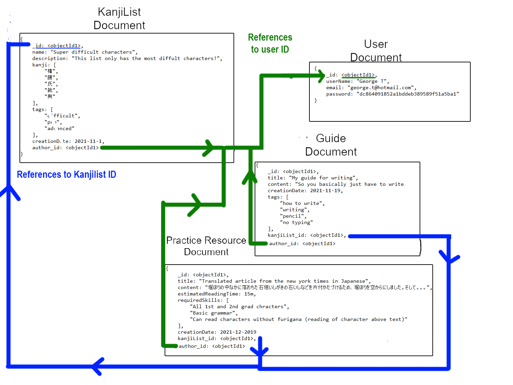

Website by: Pim Munne - 2170811
With MyKanjiList you can track your learning process and find new learning material suited for your skill level. The idea behind the website is to solve the problem of people not knowing if certain Japanese learning material is suited for their level. Many intermediate and above textbooks and courses require prior knowledge about vocab or characters. By letting other learners make kanji lists, guides and practice resourses, it becomes easier to: find suitable learning resources for your skill level, practice with a particular set of kanji characters and find out about tips and tricks you wouldn't have found in a textbook.
A Kanji character is a Japanese character used in writing. In everyday life there's around 2500 characters that people come across. Think of things like newspapers, books, or the restaurant menu. With a kanji list we want to make the learning process for a foreigner who's learning kanji easier. A kanji list just consists of a list of all the characters that belong to each other in some way, either because they appear in the same textbook, or because they're commonly found in a certain form of media (for example a comic book or TV-show). So for example if we have an advanced Japanese textbooks they require you to already know 300 kanji characters before you could start with the book. With a kanji list we could make a list with these characters. This way when someone wants to get into that particular textbook, they know what characters they have to learn before they can start using it.
A guide is a set of instructions on how to go about learning the characters from a kanji list. Each guide has 1 or no kanji list they reference. In the guide tips and information will be given about the characters from the kanji list. For example we could have a kanji list with the 100 most common kanji that appear in newspapers. The guide could give some information about kids newspaper that make practice reading those 100 characters easier. Or information could be given in what other types of media these characters are commonly found. (for example a kid's book or a cartoon)
A practice resource is an article or story for a kanji list. Each practice resource references 1 or no kanji list. For example we translate a fairy tail and only use the characters that appear in the kanji list. Instead of functioning like a guide where tips and tricks are given, it's an actual exercise you could practice reading with. The author of the practice resource could possibly also give a full text translation or just the meaning of some of the words used written with the characters.
The data model consists of the entities: KanjiList, Guide, Practice Resource, Reviews and User. As seen in the image below Guide and Practice Resource both reference the id of a kanjilist. It's better to reference to the entity rather than to embed it as a subdocument, this is simply because different Guides and Practice Resources can use the same kanji list. This prevent a lot of duplicated data. Guides and Practice Resources both have the subdocument reviews. It's better to embed these because a review can only belong to one Practice Resource or Guide.
